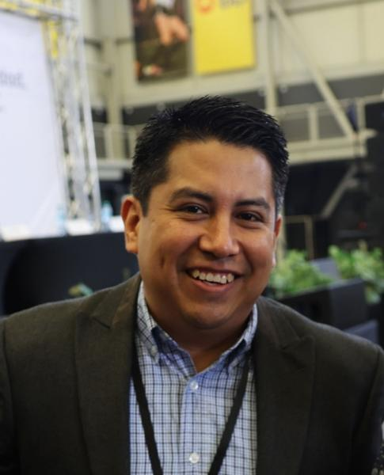

Dr. Manuel Alejandro Mejía Ramírez
Profesor-Investigador, CETYS Universidad

Semblanza
Soy Doctor en Ciencias Médicas por la Universidad de Ciencias Médicas de La Habana (2025) por el trabajo de investigación realizado en el Centro de Neurociencias de Cuba (CNEURO) sobre las bases cerebrales del procesamiento de caras utilizando modelado computacional y experimental de datos de neuroimagen, de pupilometría, de redes neurales artificiales y conductuales de pacientes con prosopagnosia y personas neurotípicas. Mi formación básica es en licenciatura en psicología (UABC) y maestría en neuropsicología cognitiva (Universidad de Edimburgo). Mi trabajo de investigación se ha desarrollado en tres líneas interrelacionadas. Mi línea de mayor interés es acerca de los mecanismos (conscientes e inconscientes) de la percepción de caras humanas y sus bases neurales. Para estudiar esto utilizamos una variedad de métodos que incluyen el diseño de experimentos cognitivos, manipulación de redes neurales artificiales, y análisis de pupilometría, resonancia magnética funcional y EEG, tanto en pacientes con lesiones cerebrales como neurotípicos. En la línea de validación psicométrica he trabajado en adaptaciones de escalas psicológicas, instrumentos de cognición social y baterías neuropsicológicas. Por último, en la línea de análisis de datos he trabajado con análisis transculturales y longitudinales en el envejecimiento cognitivo, y busco aplicar prácticas de ciencia abierta en todo mi trabajo, por ejemplo, publicando datos y código en repositorios públicos.
¿Te interesa colaborar con INCOBES?
Conoce las formas de integrarte y conversemos desde la red.